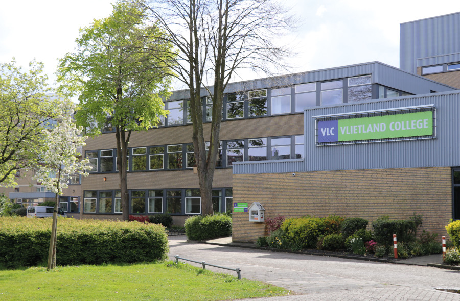

Mijn naam is Deniz Yilmaz en ik ben 15 jaar oud. Ik ben geboren in Nederland, Leiderdorp maar mijn ouders komen uit Turkije. Ik zie mezelf als een Turk. Ik zit op het Vlietland College en ik doe Havo 4. Ik heb het vakkenpakket C&M gekozen met natuurlijk informatica erbij. Mijn favoriete vak is ook informatica. Later wil ik ook graag informatica studeren aan de Hogeschool van Leiden. Als dat niet kan wil ik graag rechten studeren. Mijn hobbys zijn voetballen en gamen. Dit doe ik graag samen met mijn vrienden. Ik zou het leuk vinden om later een game te maken of te werken bij grote bedrijven zoals Google, Meta, Apple enzovoort.
Dit is mijn vakkenpakket: Engels, Nederlands, Aardrijkskunde, Cultuur en Kunstzinnige vorming, Bewegen en Sport, Duits, Frans, Geschiedenis, Informatica, LEF en Maatschappijleer. Ik ben tot nu toe erg tevreden met mijn vakken.
Hieronder vindt je een foto van mijn school.
